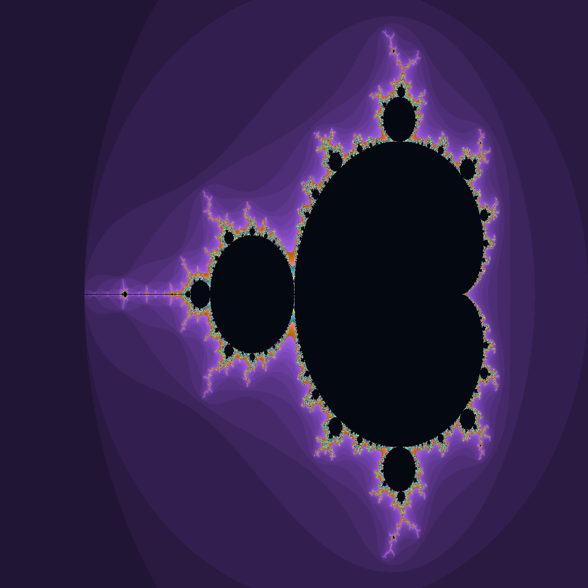
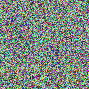
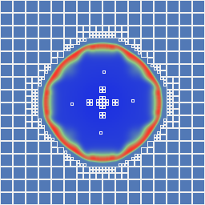
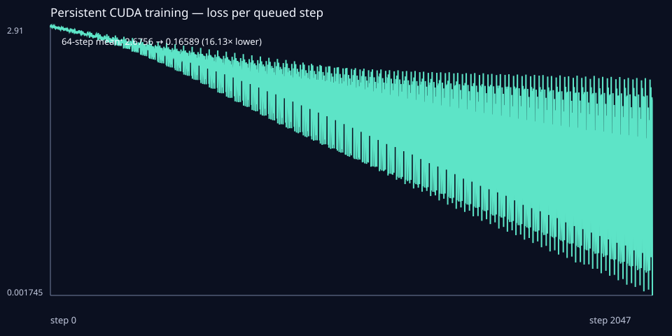
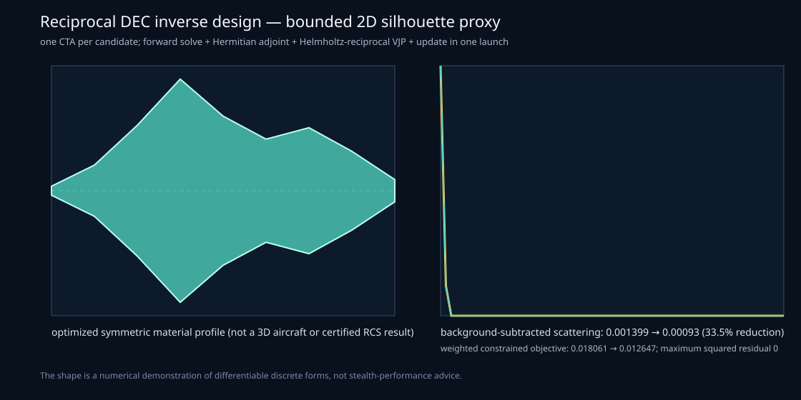

Examples
Compact kernels and a few application workloads, all written in Lean. The stills below are device outputs from GB10 runs.
Simulation results

mandelbrot — one cooperative block per SM, warp workers claiming
8×8 tiles from a shared ticket queue. 1024², 1000 iterations. Uneven cost;
every core stays busy.

plume_amr — incompressible buoyant plume. The tree
re-refines in-kernel; slots recycle.


persistent_training — 2048 SGD steps of a 16-class linear
classifier inside one persistent launch. 64-step mean loss 2.68 → 0.17.

stealth_shape_optimization — discrete-form Helmholtz inverse
design. One CTA per candidate; forward, Hermitian adjoint, and material VJP
in one launch. A 2D silhouette proxy, not a 3D aircraft or certified RCS.
Ready
| id | |
|---|---|
| saxpy | Typed launch, device buffers, bit-exact host oracle. |
| reduce | Dynamic shared memory, convergent block reduction. |
| histogram | Global atomics; Philox RNG replayed on the host. |
| async_launch | Streams, events, launchOn, kernel handles. |
| gemm | Shared-memory tiled SGEMM, typed static tensor views. |
| features | Inductives, closures, arrays, strings, ST.Ref on device. |
| physical_cores | Cuda.SM, Hopper clusters, DSM, mailboxes. |
| cluster_stencil | Jacobi stencil, interior halo through distributed shared memory. |
| host_io | Mapped typed queues and owned bulk regions. |
| mandelbrot | Ticket-scheduled SM workers, ownership map. |
| plume_amr | Regridding-free tree AMR; plume and HLLC shock. |
| persistent_training | Full SGD loop in one persistent launch. |
| mixture_of_kittens | Typed shared-plus-routed SwiGLU, eight gradient groups. |
| stealth_shape_optimization | DEC Maxwell / Helmholtz reciprocal adjoint. |
Planned
| id | |
|---|---|
| hybrid_mpc | Batched hybrid-event MPC. |
| branchingflows_molecule | Variable-length molecular branching flows. |
| transformer_training | Transformer forward, backward, optimizer, loss. |
| persistent_llama | Token-by-token decode, persistent KV cache. |
| sparse_event_kda | Sparse event-time KDA, no rasterization. |
| streaming_moe | Deterministic compact MoE routing. |
| torchlean_certified_inference | Shared spec and certificate with TorchLean. |
| r1_vm | CUDA-resident R1 interpreter. |